فروشگاه VPN خودتان را با یک دستور روی تلگرام راه بیندازید
BOBRES اشتراکهای 3x-ui را میفروشد و مدیریت میکند: یک ربات تلگرام برای مشتریها، یک داشبورد وب برای تیم شما، و همهچیز روی سرور خودتان، با دامنه، ربات و برند خودتان.
برای نصب به یک سرور اوبونتو یا دبیان، یک دامنه، یک ربات تلگرام و یک پنل 3x-ui نیاز دارید. جزئیات در پرسشهای متداول.
فارسی و انگلیسینصب با یک دستورسرور و دادههای خودتان
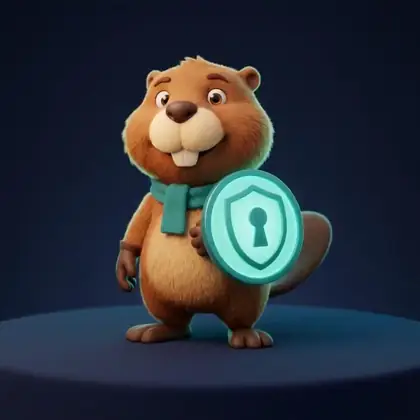
چه کار میکند
از اولین پیام مشتری تا تمدید سرویس
سه بخش که با هم کار میکنند، و هر سه مال شما هستند.
برای مشتریها: ربات تلگرام
فارسی و انگلیسی، با منوی ثابت پایین و دکمههای رنگی. مشتری پلن را انتخاب میکند، پرداخت میکند و لینک اشتراک و کد QR را همانجا میگیرد. تمدید، افزایش حجم، کیف پول، تست رایگان، دعوت از دوستان و پشتیبانی هم در همان ربات است.
برای شما: داشبورد وب
با نقشهای مالک، مدیر و پشتیبان: سفارشها و رسیدهای منتظر بررسی، پلنها، کاربران، کد تخفیف، پیام همگانی، صندوق پشتیبانی، برند و متنهای ربات. فارسی و انگلیسی، تیره و روشن.
روی سرور شما: نصب و نگهداری
نصب با یک دستور، پشتیبانگیری روزانهٔ رمزنگاریشده، هشدار در تلگرام، مدیریت HTTPS، بهروزرسانی با بررسی امضای نسخه و برگشت خودکار، و سختسازی سرور.
امکانات
آنچه یک فروشگاه VPN لازم دارد
هر مورد این فهرست ساخته شده است؛ چیزی که هنوز نیست در فهرست نیامده.
ربات فارسی و انگلیسی
دکمهها بر اساس کارکرد رنگ دارند: سبز برای پرداخت، آبی برای کارهای اصلی، قرمز برای انصراف. یک منوی ثابت هم زیر چت میماند.
خرید، تمدید و تست رایگان
پلن حجمی، زمانی یا هر دو؛ کد تخفیف؛ تمدید با همان لینک اشتراک؛ بستهٔ حجم اضافه؛ و یک تست رایگان برای هر حساب تلگرام.
کیف پول و دعوت از دوستان
شارژ کیف پول با تاریخچهٔ تراکنشها، و پاداش به دعوتکننده پس از اولین خرید دوستش. یادآوری پیش از پایان سرویس و حجم هم خودکار است.
روشهای پرداخت
کارت به کارت، تتر (دستی یا خودکار روی ترون)، استارز تلگرام و، اگر بخواهید، زرینپال. هر پرداخت دقیقاً یک بار ثبت میشود و دفتر کیف پول فقط افزوده میشود.
تتر خودکار: استاندارد و بالاتر
نمایندگان
نمایندگان از داخل ربات برای مشتریهایشان میخرند: با قیمت سطح خودشان، اعتباری تا سقف مجاز، با صورتحساب و پورسانت.
استاندارد و بالاتر
چند سرور 3x-ui
چند پنل با بررسی سلامت هر دقیقه، وزن و انتخاب سرور برای هر پلن. سرویس تازه روی سرور سالمی ساخته میشود که به نسبت وزنش مشتری کمتری دارد.
بیش از یک سرور: استاندارد و بالاتر
داشبورد با نقشها
مالک، مدیر و پشتیبان هر کدام فقط همان بخشهایی را میبینند که مجازند. ورود با لینک یکبارمصرف یا با رمز و کد احراز هویت، و گزارش حسابرسی که فقط افزوده میشود.
برند خودتان
نام، لوگو، رنگ، عکس پروفایل ربات و تکتک متنهای ربات را به دو زبان از داشبورد عوض کنید.
حذف نشان BOBRES: حرفهای
پشتیبانگیری
هر روز، رمزنگاریشده: ۷ نسخهٔ آخر روی سرور، هر نسخه (تا ۵۰ مگابایت) در تلگرام برای مالک، و اگر بخواهید یک کپی هم روی فضای S3. بازگردانی با یک فرمان.
هشدار سیستم در تلگرام
اگر سرویسی، سرور 3x-ui، درگاه، دیسک، پشتیبان یا گواهی HTTPS مشکل پیدا کند در تلگرام خبر میگیرید، و وقتی درست شد هم.
مدیریت HTTPS
گواهی خودکار برای دامنه (پیشفرض)، گواهی Let’s Encrypt برای آیپی سرور، یا گواهی و کلید خودتان. از داشبورد یا با فرمان bobres ssl.
نصب، بهروزرسانی و برگشت
نصبکنندهای با یک دستور که پیش از اجرا امضای نسخه را بررسی میکند. bobres update با کانال پایدار و بتا، و اگر نسخهٔ جدید سالم بالا نیاید خودش برمیگردد. سختسازی سرور هم با bobres harden.
تصویرها
ببینید چه شکلی است
تصویرهای داشبورد از یک نصب واقعی BOBRES با دادههای آزمایشی گرفته شدهاند: کاربران، سفارشها و رسیدها ساختگیاند.
پشتیبانگیری: هر نسخه رمزنگاریشده است و در تلگرام برای مالک فرستاده میشود.
چیدمان موبایل هم داردروی صفحهٔ کوچک منو در یک کشو جمع میشود. این سه صفحه با عرض ۳۹۰ پیکسل گرفته شدهاند.
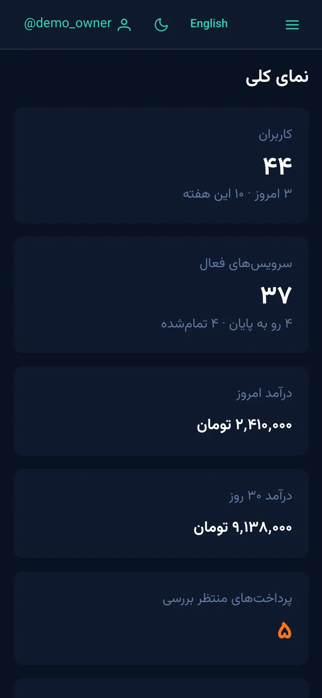
نمای کلی
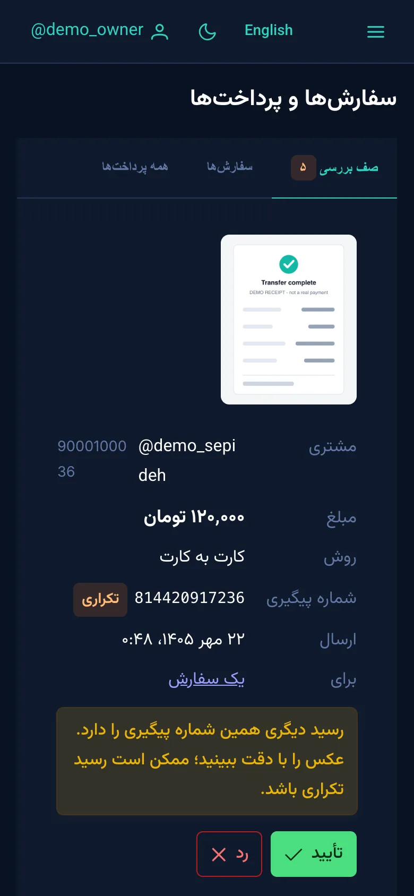
پرداختها
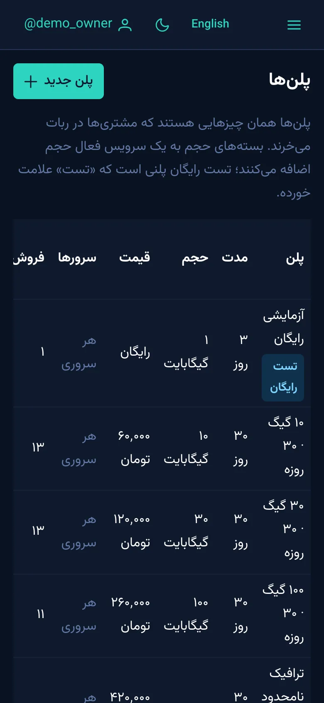
پلنها
ربات، از دید مشتریتصویرسازی بر پایهٔ پیامهای واقعی ربات؛ متنها و رنگ دکمهها همانهایی است که ربات میفرستد.
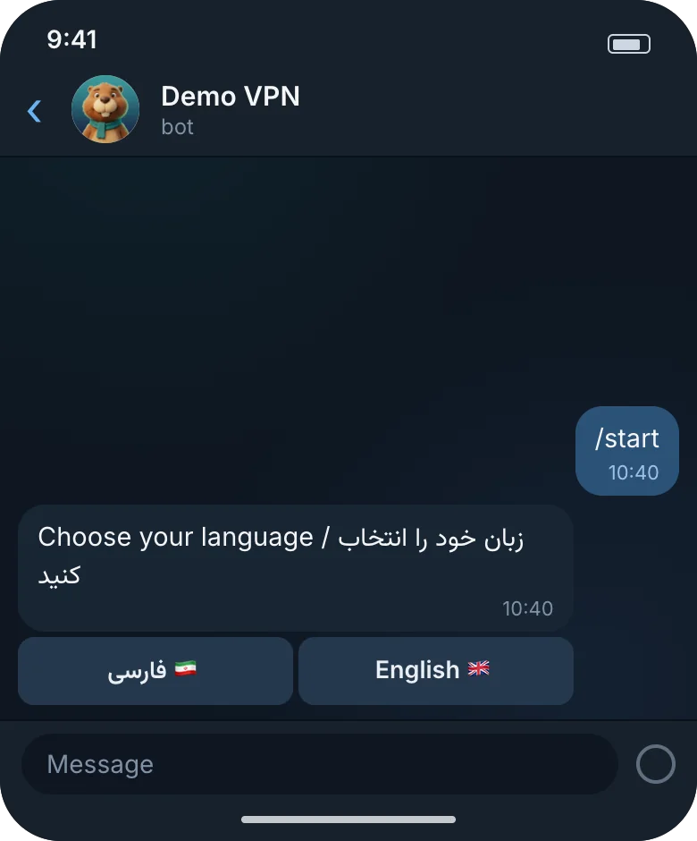
انتخاب زبان با /start
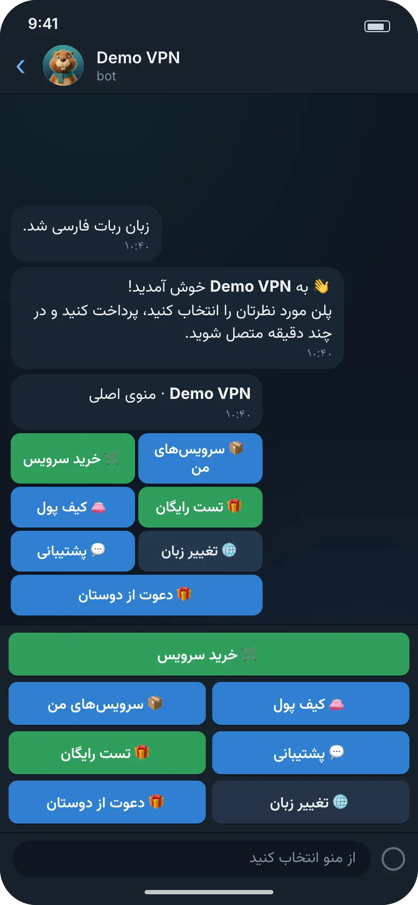
خوشآمدگویی و منوی رنگی
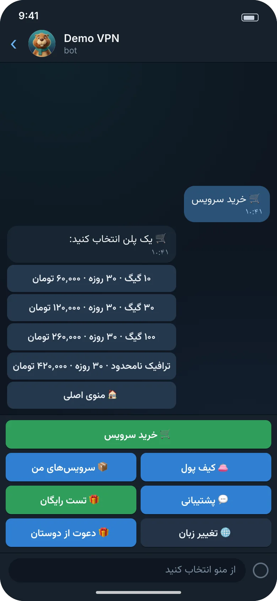
فهرست پلنها
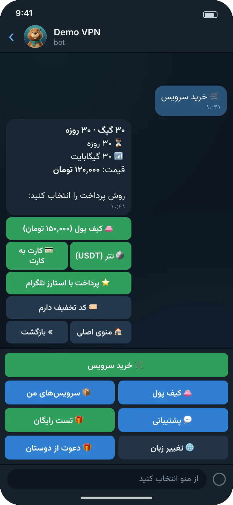
انتخاب روش پرداخت
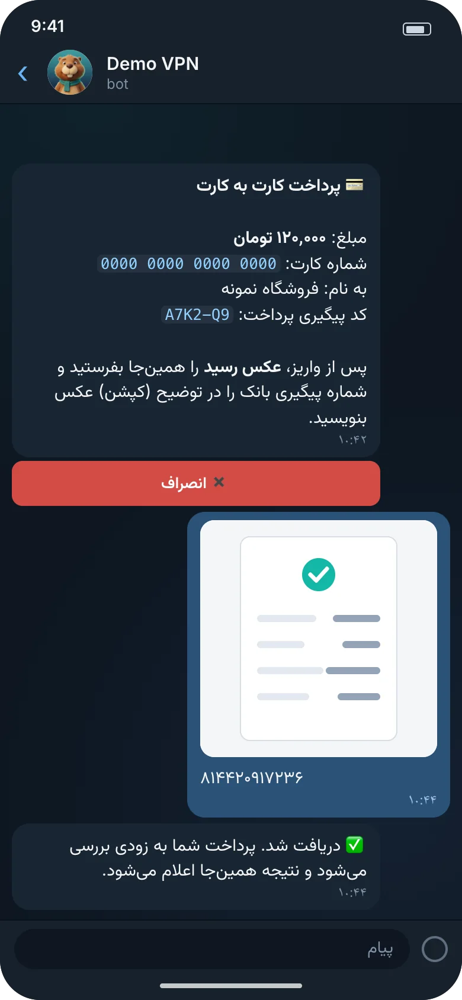
کارت به کارت و ارسال رسید
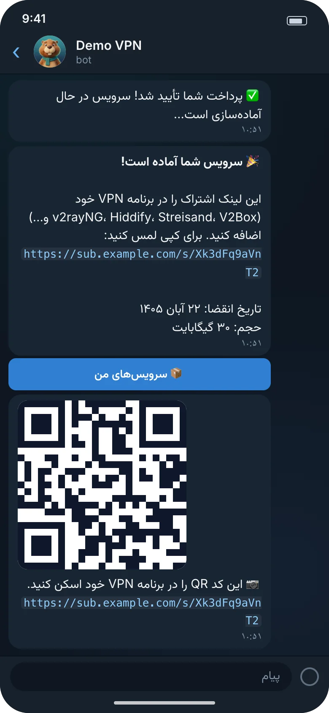
تحویل با لینک و QR
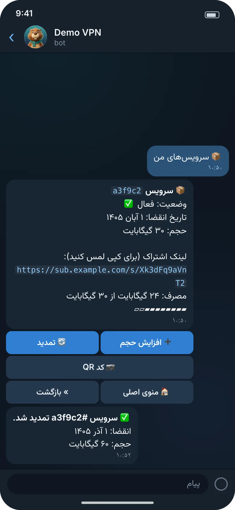
سرویس من و تمدید
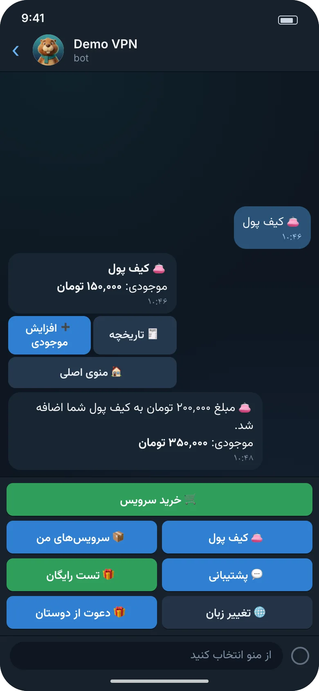
کیف پول
نمایش کوتاهکمتر از نیم دقیقه، بدون صدا.
تصویرسازی ربات و دادههای داشبورد نمونه و ساختگیاند.
روش کار
سه قدم تا اولین فروش
آماده کنید
چهار چیز لازم است:
یک سرور اوبونتو یا دبیان
دامنهای که به آن سرور اشاره کند
یک ربات از @BotFather و شناسهٔ عددی تلگرام شما
یک پنل 3x-ui با توکن API
یک دستور اجرا کنید
نصبکننده امضای نسخه را بررسی میکند، دامنه، شناسهٔ مالک، توکن ربات و پنل را میپرسد (توکنها پنهان تایپ میشوند)، همهٔ گذرواژهها و کلیدها را میسازد و فروشگاه را بالا میآورد.
پلن بسازید و بفروشید
در ربات /dashboard را بزنید و لینک ورود یکبارمصرف را باز کنید. پلنها و روشهای پرداخت را بچینید، و فروشگاهتان آمادهٔ مشتری است.
قیمت و سطحها
هسته رایگان است. امکانات ویژه با اشتراک.
اشتراک برای هر نصب جداگانه است. قیمتها را از ما بپرسید.
۳۰ روز آزمایش
هر نصب جدید ۳۰ روز با امکانات ویژه شروع میشود؛ پیش از انتخاب سطح، همهچیز را میتوانید امتحان کنید، بهجز برداشتن نشان BOBRES.
همهٔ سطحها شامل ربات، داشبورد، پشتیبانگیری، هشدارها، مدیریت HTTPS و بهروزرسانی با برگشتاند. «نامحدود» یعنی بدون سقف.
امکان
رایگانبرای شروعبدون هزینه
استانداردبرای فروشگاه در حال رشدتماس بگیرید
حرفهایبدون سقف، با برند خودتانتماس بگیرید
ظرفیت
سرورهای 3x-ui
۱
تا ۳
نامحدود
سرویسهای فعال
تا ۲۵
تا ۵۰۰
نامحدود
اعضای تیم در داشبورد
۲
۵
نامحدود
فروش
ربات فارسی و انگلیسی، کیف پول، تست رایگان، دعوت از دوستان
دارد
دارد
دارد
کارت به کارت، تتر دستی، استارز تلگرام، زرینپال (اختیاری)
دارد
دارد
دارد
تتر TRC20 خودکار
ندارد
دارد
دارد
نمایندگان
ندارد
دارد
دارد
برند و نگهداری
نام، لوگو، رنگ و متنهای ربات
دارد
دارد
دارد
حذف نشان BOBRES (وایتلیبل)
ندارد
ندارد
دارد
پشتیبانگیری، هشدار تلگرام، مدیریت HTTPS، بهروزرسانی با برگشت، سختسازی
فعلاً راه تماس با ما صفحهٔ «مسائل» (Issues) مخزن پروژه در GitHub است. این صفحه عمومی است و همه آنچه مینویسید را میخوانند: توکن، کلید یا اطلاعات خصوصی در آن نگذارید.
پرسشهای متداول
پاسخهای روشن، بدون حاشیه
برای نصب چه چیزهایی لازم است؟
یک سرور اوبونتو ۲۲٫۰۴ یا ۲۴٫۰۴، یا دبیان ۱۱، ۱۲ یا ۱۳ (amd64 یا arm64) با ۱ گیگابایت رم (۲ گیگابایت بهتر است)، ۱۰ گیگابایت فضای آزاد، پورتهای ۸۰ و ۴۴۳ آزاد و دسترسی root.
یک دامنه که رکورد A آن به سرور اشاره کند.
یک ربات تازه از @BotFather و شناسهٔ عددی تلگرام خودتان.
یک پنل 3x-ui با توکن API. نسخههای 3.8.5 تا 3.9.0 آزموده شدهاند، و پنلها را بعداً هم میتوانید از داشبورد اضافه کنید.
نصبکننده در صورت نیاز Docker را هم نصب میکند.
به 3x-ui نیاز دارم؟ با نسخههای قدیمی کار میکند؟
بله. BOBRES کاربران را روی پنلهای 3x-ui میسازد و مدیریت میکند. فعلاً فقط نسخهٔ ۳ پشتیبانی میشود و روی 3.8.5 و 3.9.0 آزموده شده است. برای نسخههای قدیمیتر فعلاً آداپتری وجود ندارد؛ آن را فقط وقتی مشتری لازم داشته باشد میسازیم.
چه روشهای پرداختی دارد؟
کیف پول، همیشه روشن.
کارت به کارت، تتر (TRC20 یا ERC20) و لینک پرداخت زرینپال (اختیاری): مشتری عکس رسید میفرستد (برای تتر شناسهٔ تراکنش هم کافی است) و شما از صف بررسی تأیید میکنید. شمارهٔ پیگیری تکراری علامت میخورد.
استارز تلگرام، با نرخ خودتان به تومان.
زرینپال آنلاین (اختیاری)، تا وقتی شناسهٔ پذیرنده را وارد نکنید خاموش است.
تتر TRC20 خودکار روی ترون: هر پرداخت مبلغ دقیق و یکتای خودش را دارد و ۴۵ دقیقه مهلت. پرداخت دقیق همان مبلغ خودکار تأیید میشود (سطح استاندارد و بالاتر).
زرینپال آنلاین چه شرطی دارد؟
زرینپال آنلاین به حساب پذیرندهٔ تأییدشدهٔ خودتان نیاز دارد. ما بررسی نکردهایم که زرینپال فروشگاه VPN را میپذیرد یا نه، پس پیش از روشن کردنش از پشتیبانی خود زرینپال بپرسید. کارت به کارت، تتر و استارز تلگرام بدون آن کار میکنند.
دادهها و مشتریها مال کیست؟
مال شما. BOBRES روی سرور خودتان اجرا میشود، با دامنه، ربات و پنلهای خودتان؛ مشتریها، سفارشها و کیف پولها در پایگاه دادهٔ همان سرور میمانند و پشتیبانها با یک کلید پشتیبان رمزنگاری میشوند.
چیزی دربارهٔ مشتریهای شما برای ما فرستاده نمیشود. تنها نصبی که فعالسازی آنلاین لایسنس را به کار میبرد با سرور لایسنس پروژه حرف میزند (این سرور، مثل هر سرور دیگری، نشانی درخواستدهنده را میبیند). هنگام فعالسازی، کلید، شناسهٔ نصب، دامنه و شمارهٔ نسخه فرستاده میشود. تازهسازی روزانه، توکن لایسنس نصبشده و شمارهٔ نسخه را میفرستد. نصبهای رایگانی که هیچوقت فعال نشوند چیزی نمیفرستند. نسخهها از GitHub دریافت میشوند. (ربات شما البته با تلگرام، درگاههای پرداخت و پنلهایتان حرف میزند، همانطور که باید.)
یک درخواست دیگر هم هست: در حالت HTTPS با آیپی سرور، ربات برای دانستن آیپی عمومی سرور از api.ipify.org میپرسد (و اگر جواب نداد از ifconfig.me). هیچ دادهای از مشتریها در آن درخواست نیست.
بهروزرسانی چطور است؟
با sudo bobres update. امضای نسخه بررسی میشود، پشتیبان گرفته میشود، یک نقطهٔ بازگشت میماند و اگر نسخهٔ جدید سالم بالا نیاید خودکار برمیگردد. اگر بعداً پشیمان شدید، sudo bobres rollback آخرین بهروزرسانی را برمیگرداند. کانال پایدار و بتا هم هست.
لایسنس و اشتراک را ساده توضیح دهید.
هسته رایگان است: ربات، داشبورد، پرداختهای دستی، استارز، زرینپال (اختیاری)، پشتیبانگیری و HTTPS. سطح رایگان تا ۱ سرور، ۲۵ سرویس فعال و ۲ عضو تیم را پوشش میدهد.
اگر به نمایندگان، تتر خودکار، سرور و سرویس بیشتر یا حذف نشان BOBRES نیاز دارید، برای هر نصب اشتراک میگیرید: استاندارد یا حرفهای. هر نصب جدید ۳۰ روز با امکانات ویژه شروع میشود (همهچیز بهجز برداشتن نشان BOBRES). قیمتها: با ما تماس بگیرید.
اگر اشتراک تمام شود چه میشود؟
چیزی پاک نمیشود. مشتریهای شما و سرویسهایشان به کار ادامه میدهند و نصب شما به سطح رایگان برمیگردد. لایسنس هیچوقت چیزی را که از قبل هست متوقف نمیکند؛ فقط روی کارهای تازه اثر میگذارد.
چه تدبیرهای امنیتی دارد؟
چهار سرویس جدا، هر کدام با نقش پایگاه دادهٔ خودش و توکن خودش؛ توکنهای 3x-ui فقط پیش سرویس provisioner است و گذرواژهها و کلیدهای درگاهها فقط پیش سرویس payments.
گذرواژهها و کلیدها روی دیسک با کلید جدا برای هر سرویس رمزنگاری میشوند.
نسخهها با Ed25519 امضا میشوند و تصویرهای Docker خودِ BOBRES با cosign. تصویرهای Postgres، Redis و Caddy ساختهٔ دیگراناند و با شمارهٔ نسخه (Caddy با digest هم) قفل شدهاند.
داشبورد: توکن CSRF، کد احراز هویت برای هر ورود با رمز، سیاست CSP سختگیرانه و گزارش حسابرسی که فقط افزوده میشود.
سرویسهای خودِ BOBRES با یک کاربر بدون دسترسی ویژه، با فایلسیستم فقطخواندنی و بدون قابلیت (capability) اضافه اجرا میشوند.
اینها تدبیرند، نه تضمین. پیش از انتشار عمومی، خودتان هم نصب را بررسی کنید.
میتوانم پیش از خرید امتحانش کنم؟
بله. یک سطح رایگان با محدودیتهای جدول بالا هست، و هر نصب تازه ۳۰ روز با امکانات ویژه شروع میشود، همهچیز بهجز برداشتن نشان BOBRES.